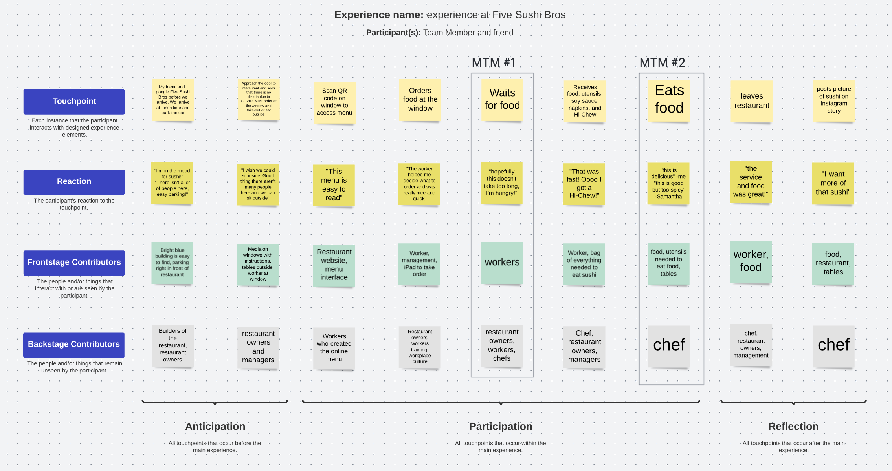
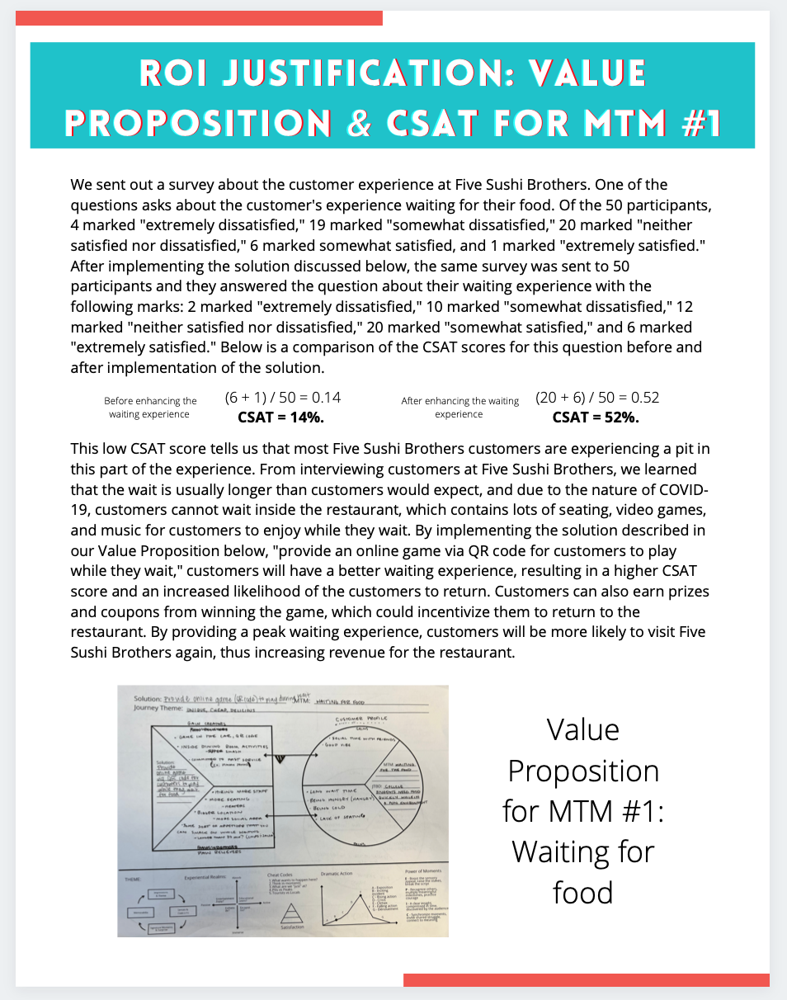
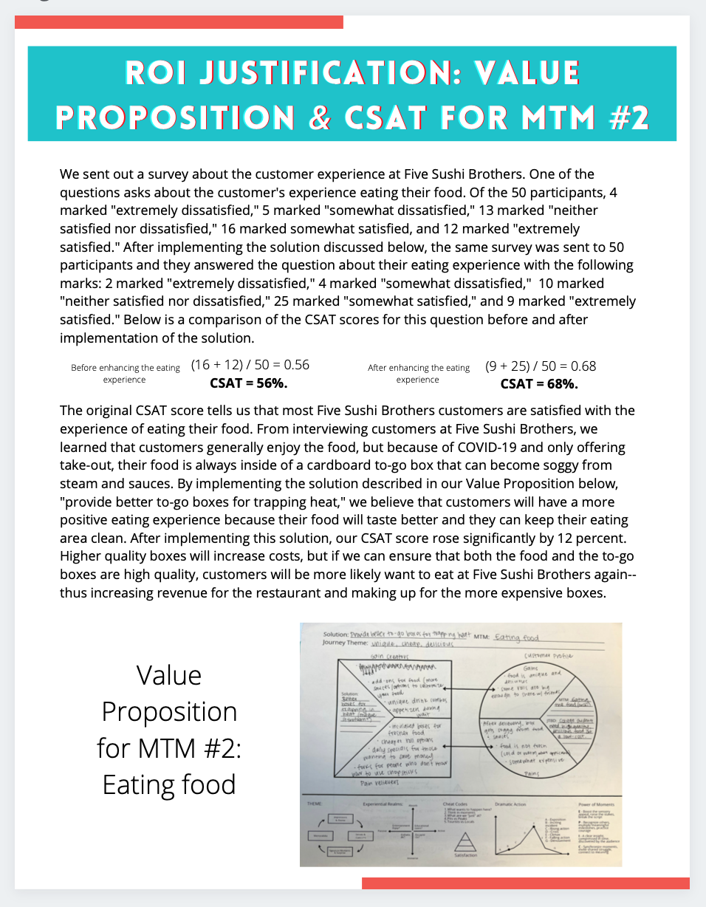

For this project, we used four different techniques to gather data. First, we went to the Five Sushi Brothers to observe the environment, customers, employees, interactions, etc. Next, we interviewed actual customers to learn about their experience. Third, we participated in the experience ourselves. Lastly, we used triangulation techniques to learn more about customers' experience.
For each technique, I created a two page summary of my process and findings. All of these summaries are compiled in a Google folder.
Click here to go to the Google folder!Customer Journey Map

Moments That Matter
- Waiting for Order
- At any restaurant, the wait for your order can really affect your overall experience. When your wait time is short, you are pleasantly surprised. But when your wait time is long, it makes you impatient and "hangry", casting a negative shadow on the entire dining experience. At Five Sushi Brothers, we noticed that the wait time was a major pain point for customers. To combat this pit with something other than the obvious solution of hiring more staff, we came up with this suggestion:
- Five Sushi Brothers could offer customers a game to play on their phones while they wait in their cars for their food. It would be similar to the game "Kahoot!"" where players battle against each other to answer the questions correctly as fast as possible. Five Sushi Brothers could create a game with sushi-related trivia questions and display a QR code to join the game next to their menu QR code. This would keep customers entertained while they waited for their food and would turn a pit into a potential peak.
- Eating Food
- Since the point of going to a restaurant is to eat yummy food, we decided that the second Moment That Mattered for Five Sushi Brothers was when customers actually ate their food. To make this moment even better, we offer this recommendation:
- Five Sushi Brothers should invest in better take-out boxes. The current boxes used by the restaurant often become soggy on the bottom from the heat of the sushi and/or the sauces the top the sushi. This is an undesirable quality to have in your food container. If Five Sushi Brothers invested in better boxes that would keep heat in as well as stay dry, customers' dining experience would be even better
ROI for Moments That Matter

